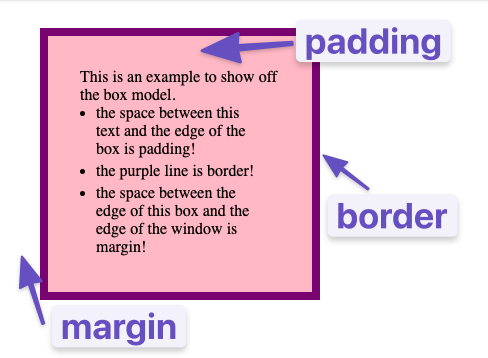

The Box model
Every single thing on a webpage has a rectangular box, kind of like this blog webpage.
In CSS this as seen as a design and layout term called the Box Model.
You can get a rough Idea of it by outlining HTML elements in red like the below image.

Margins, Borders and Paddings
There are many ways to manipulate the Box model.
Laying out and positioning them are mainly decided by 3 main CSS properties:
- margin - Increases the space of the border of a box and the border of adjacent boxes.
- border - Adds space between the margin and padding
- padding - Increases the space between the border of a box and the content of the box.
Below is where you can see the difference between the 3 properties and how they used.
